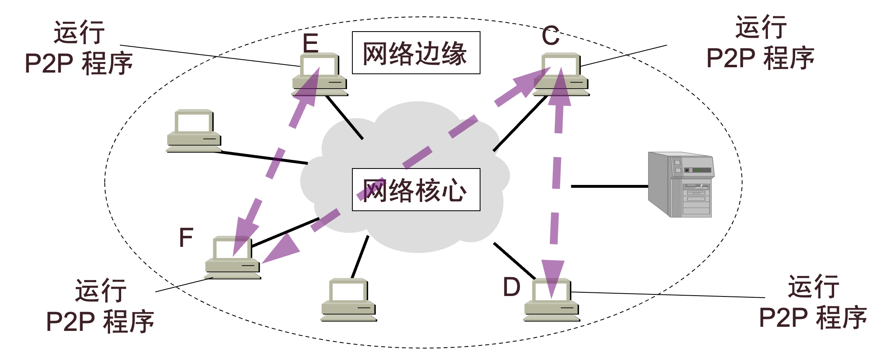
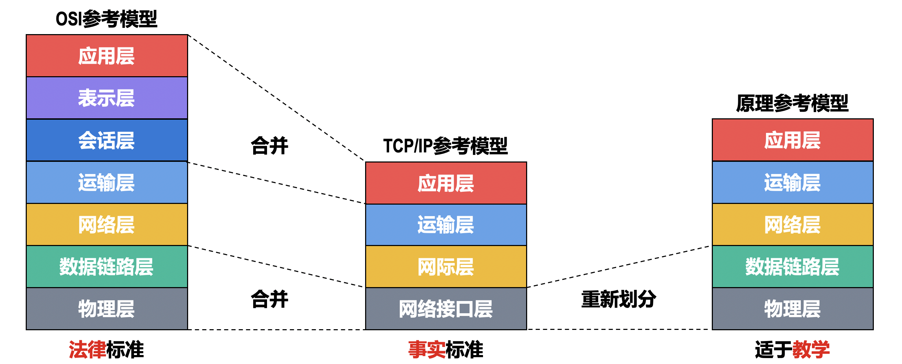
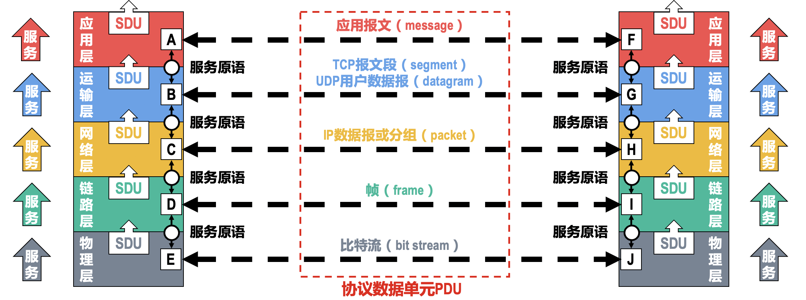
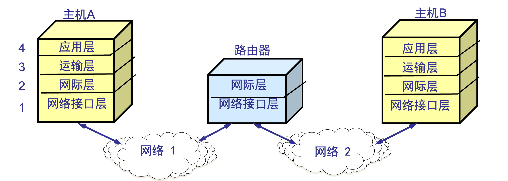
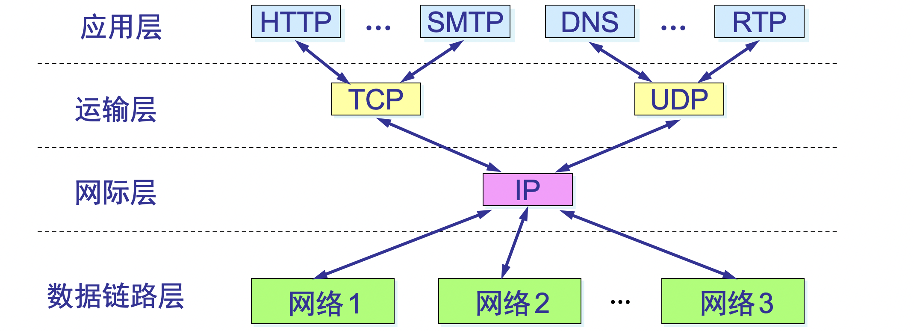

计算机网络概述
基本概念
计算机网络（简称“网络”）是由若干结点（node）和链路（link）组成。结点可以是计算机、集线器、交换机或路由器等。与网络相连的计算机称为主机（host）。
连接在网络上的手机、电视等都是主机。注意：虽然路由器是计算机，但不能称其为主机。
多个网络通过一些路由器相互连接起来，构成一个范围更大的网络，称其为互连网（internet）。可见，互连网是“网络的网络”。
因特网（Internet）
Internet是全世界最大的计算机网络，它的基本特点（或者说所能提供的最重要的功能）为：
- 连通性：计算机网络使上网用户之间都可以交换信息，好像用户的计算机都可以彼此直接连通一样。
- 共享：信息共享、软件共享、硬件共享。
因特网的发展阶段：ARPANET → 互连网 → 三级结构的因特网（主干网、地区网、校园或企业网） → 全球范围的多层次ISP结构的因特网。
关于ISP（Internet Service Provider，因特网服务提供者）
因特网管理机构不会把单个的IP地址分配给单个用户，而是把整块的IP地址有偿租赁给ISP。机构或个人只需将ISP缴纳费用，就可以从该ISP获取所需IP地址的租用权，并可通过该ISP接入因特网。
ISP也分为不同层次：主干ISP、地区ISP、本地ISP。因特网的主干ISP全球只有十几个，而本地ISP却有好几十万个。国内较大的ISP有：中国移动、中国联通、中国电信等。本地ISP可以是公司、学校等，给用户提供最直接的服务。

因特网交换点IXP（Internet eXchange Point）的主要作用：允许2个网络直接相连并交换包。
因特网的组成
根据工作方式的不同，可以将因特网分为2块：
-
边缘部分：由所有连接在因特网上的主机（又称为端系统）组成。
这部分是用户直接使用的，用来进行通信和资源共享。主机是为用户进行信息处理的，并且可以和其它主机通过网络交换信息。
-
核心部分：由大量网络和路由器组成。
这部分是为边缘部分提供服务的（连通性和交换）。路由器用来转发分组，进行分组交换。
在因特网核心部分的路由器之间一般都用高速链路相连接，而在网络边缘部分的主机接入到核心部分则通常以相对较低速率的链路相连接。
边缘部分的通信
计算机之间的通信是指：主机A的某个进程和主机B上的另一个进程进行通信。
端系统之间的通信方式可以分为2类：
-
客户-服务器（C/S）方式
客户（client）和服务器（server）都是指通信中所涉及的2个进程。该方式描述的就是进程之间服务和被服务的关系。
特点：客户是服务请求方，服务器是服务提供方。客户程序必须知道服务器程序的地址，服务器程序不需要知道客户程序的地址。客户程序不需要特殊的硬件和很复杂的操作系统，而服务器一般需要有强大的硬件和高级的操作系统支持。通信关系建立后，客户和服务器都可发送和接收数据（通信可以是双向的）。

-
对等方式（P2P）方式
两个主机在通信时并不区分哪一个是服务请求方还是服务提供方。只要两个主机都运行了对等连接软件（P2P 软件），它们就可以进行平等的、对等连接通信。双方都可以下载对方已经存储在硬盘中的共享文档。
本质上，P2P方式仍是使用客户服务器方式，只是对等连接中的每一个主机既是客户又同时是服务器。

核心部分的工作
互联网的核心部分的工作方式（也就是路由器的工作方式）有两种：
-
路由器转发分组：这是直接为主机之间的通信服务的。
路由器收到一个包，先暂时存储至内存，检查其首部，查找转发表，按照其中的目的地址，找到合适的接口转发出去，把包交给下一个路由器。 这样以存储转发的方式，逐级传递，把包最终交付给目的主机。
-
路由器之间不断地交换路由信息：这是为了保证路由表的路由信息与网络的实际拓扑一致。
当讨论因特网的核心部分中的路由器转发包的过程时，往往把单个的网络简化成 一条链路，而路由器简化为核心部分的节点，因为在转发分组时最重要的是知道路由器之间是怎样连接起来的。

网络交换技术
让所有用户都两两相连是不现实的，只能使用交换机，每个用户都连接到交换机上，交换机使用交换的方法，让用户之间可以进行通信。

交换（switching）的含义就是转接——把一条电话线转接到另一条电话线，使它们连通起来。从通信资源的分配角度来看，交换就是按照某种方式动态地分配传输线路的资源。
电路交换
以A给B打电话为例，当B听到交换机送来的振铃音并摘机后，从A端到B端就建立了一条连接，也就是一条专用的物理通路。 这条连接保证了双方通话时所需的通信资源，而这些资源在双方通信时不会被其他用户占用。 通话完毕后，交换机释放这条专用的物理通路（即把刚才占用的所有通信资源归还给电信网）。
这种必须经过 ”建立连接(占用通信资源)→通信(一直占用通信资源)→释放连接(归还通信资源)” 三个步骤的交换方式称为电路交换，因此电路交换一定是面向连接的（connection-oriented）。
面向连接和无连接是强调通信必须经过什么样的阶段。面向连接必须经过三个阶段：“建立连接→传送数据→释放连接”，而无连接则只有一个阶段：“传送数据”。
电路交换就是在 A 和 B 在通信前，必须先建立从 A 到 B 的连接（中间可能经过很多的交换结点）。连接建立后，通信就沿着这条路径进行。A 和 B 在通信期间始终全程占用端到端的通信资源，即使在没有信号在通信路径上流动时（例如打电话时双方暂时停止说话）也同样占用信道。通信完毕时就释放所占用的信道，即断开连接， 将通信资源还给网络，其他用户才可以使用。
在电路交换的通信过程中，只要在整个连接中有一个环节出了故障，那么整个连接就会失败，通信中断。若要重新进行通信，必须重新建立连接。可见，电路交换系统不能自动从故障中进行恢复。
但电路交换有一个最主要的优点：只要连接能够建立，那么双方通信所需的传输带宽就已经分配好而不会再改变（静态分配传输带宽），从源点到终点都是同样的传输速率。通信双方愿意占用通信资源多久，就占用多久（可能付费），而不受网络中的其他用户的影响。当网络发生拥塞时，网络中的其他用户很可能反复呼叫都无法建立连接，但这些动作都不会影响己经占用了通信资源的用户。

用户线传递的是模拟信号，中继线传递的是数字信号。
报文交换
也采用存储转发技术，整个报文先传送到相邻节点，全部存储下来后再查找转发表，转发到下一个节点。
发送过程可能需要排队，时延较长。
分组交换
分组交换（packet switching）也是采用存储转发技术（最主要的特点），在数据通信的过程中断续（或动态）分配传输带宽，大致过程为：
- 把整个报文（message）划分为一个个更小的等长数据段。
- 在每一个数据段前面，加上一些必要的控制信息组成的首部 (header)后，就构成了一个分组（又称为包）【包是因特网中传送的基本数据单元】。
- 每个包根据其首部的控制信息在因特网中独立地选择传输路径，最终正确地交付到终点。
若A要向B发送一个长度为的报文，设每个包的长度为，其中包头长度为，则所发送的数据大小为：
路由器每次暂存的只是一个个短分组，而不是整个长报文。且短分组是暂存在路由器的内存中的，而不是存储在磁盘上，这就保证了较高的交换效率。
分组交换中每条链路只在传输分组时才被占用，其余都处于空闲状态，可以用于传输其它包，即：分组交换不是全程占用资源而是动态分配传输带宽，对通信链路是逐段占用的（若某段链路的带宽较高，分组的传输速率就较快；若另一段链路的带宽较低，传输速率就较慢）。
电路交换和分组交换的根本区别是：通信时用户对网络资源的占用方式。电路交换是在连接建立后到连接释放前全程占用信道资源；而分组交换则是在数据传送时断续占用信道资源。
如果一个链路的通信量较大或发生故障，那么路由器可以把分组沿另一个路由传送（分布式的路由选择协议），使数据的传送能够继续下去。传送数据的源点和接收数据的终点甚至不会感觉到网络中所发生的故障。因此分组交换网络有很好的生存性。
现代互联网的分组交换采用 IP 协议，用无连接的IP数据报来传送数据，即不需要先建立连接就可以立即发送数据，数据发送完毕后也不存在释放连接。
分组交换也可以面向连接。例如 X.25 网络、帧中继网络、ATM网络 都属于分组交换网，但它们在传送用户数据之前必须先建立连接，传送完毕后还必须释放连接。这些网络就是面向连接的。
因此使用面向连接服务的可以是电路交换，也可以是分组交换。
分组交换的缺点：
- 分组在各路由器存储转发时需要排队，这就会造成一定的时延。
- 分组交换不像电路交换那样通过建立连接来保证通信时所需的各种资源，因而无法确保通信时端到端所需的带宽。
- 各分组必须携带的控制信息也造成了一定的开销。
- 整个分组交换网还需要专门的管理和控制机制。
3种方式的比较

- 若要连续传送大量的数据，且其传送时间远大于连接建立时间，则电路交换的传输速率较快。
- 报文交换和分组交换不需要预先分配传输带宽，在传送突发数据时可提高整个网络的信道利用率。
- 由于一个包的长度往往远小于整个报文的长度，因此分组交换比报文交换的时延小，同时也具有更好的灵活性。
计算机网络的种类
按网络作用范围：
- 广域网WAN（Wide Area Network）
- 城域网MAN（Metropolitan Area Network）
- 局域网LAN（Local Area Network）
- 个人区域网PAN（Personal Area Network）
按使用者：
- 公用网（public network）
- 专用网（private network）
还有一种特殊的网络，专门用于把用户接入因特网，它就是本地接入网AN（Access Network）。
接入网实际上就是本地ISP所拥有的网络，它既不是因特网的核心部分，也不是边缘部分，由端系统连接到本地ISP的第一个路由器之间的物理链路组成，只起到“桥梁”作用。接入网应当使用户可以更快地从计算机网络可靠地下载文件和上传数据。
计算机网络的性能
-
速率（数据率、比特率）：数据的发送速率（往往指额定速率），即单位时间可以向所连接的媒体或网络注入（发送）多少个比特。
单位：
bit/s（bps、b/s）…
-
带宽（bandwidth）：网络中某信道的最高速率。
-
吞吐量：单位时间内通过某个信道的实际数据量：上传速率+下载速率。
额定速率是吞吐量的上限。实际吞吐量取决于网络的具体情况。
当网络的吞吐量增大时，分组在路由器中等待转换时就会经常处在更长的队列中，因而增加了排队的时间，时延就会增大。吞吐量很大时，可能会导致网络拥塞。
-
时延：
-
发送时延（传输时延）：
注意：（短板效应）。
高速网络链路 仅仅只是数据的发送速率较高，发送时延较小。
-
传播时延：
电磁波在真空中传播：；在铜线上传播：；在光纤中传播： 。
1km光纤链路的传播时延为： 。
通常认为光纤快，是说 可以用很高的速率向光纤发送数据，而光纤的传播速率相对而言并不快。
-
处理时延、排队时延（难以计算）
（当网络的通信量很大时会发生队列溢出，使分组丢失，这就相当于排队时延为无穷大。）
总时延即这4种时延的总和。


若不考虑排队时延与处理时延，则：

假设各分组等长，各链路等长，主机和路由器的发送速率相等，不考虑排队时延和处理时延，则源主机通过 个路由器的转发 给目的主机发送 个分组的总时延为：
发送时延与传播时延哪一个占主导 这要视具体问题而定。
-
-
时延带宽积：传播时延 × 带宽
若A，B间由一条链路相连，A持续向B发送数据，若时延带宽积为 ，则其代表的意义为：当A发送的第一个比特即将到达B时，此时链路中正有至多 个比特正在传送中，体现了链路是否被充分使用。
时延带宽积的单位为bit，因此其又被称为以比特为单位的链路长度。
-
往返时间RTT（Round-Trip Time）：从发送端发送数据包开始，到发送端收到接收端发来的相应确认包为止，总共耗费的时间。
RTT包括各中间结点的处理时延、排队时延、转发数据的发送时延。
-
有效数据率： (bit/s)
-
利用率
-
信道利用率：某条链路有百分之几的时间是被利用的（即有数据通过）。完全空闲的信道的利用率为零。
信道利用率并非越高越好，根据排队论，当某信道的利用率增大时，该信道引起的时延也就迅速增加。
-
网络利用率：网络中所有链路的信道利用率的加权平均。
当网络的通信量较少时，产生的时延并不大，但在网络通信量不断增大时，分组在交换节点（路由器或交换机）中的排队时延会随之增大，因此网络引起的时延就会增大。
令 表示网络空闲时的时延， 表示网络当前的时延， 表示网络利用率，则理想条件下满足：

一些大型ISP往往会控制信道利用率不超过50%。如果超过了就要进行扩容：增大线路的带宽。
-
-
丢包率：在一定的时间范围内，传输过程中丢失的分组数量与总分组数量的比率。
分组丢失通常有2种情况：
- 分组在传输过程中出现误码，被传输路径中的节点交换机（例如路由器）或目的主机检测出误码而丢弃。
- 节点交换机根据丢弃策略主动丢弃分组。
丢包率可以反映网络的拥塞情况。
已知：要传送的报文共 bit。从源点到终点共经过 段链路，每段链路的传播时延为 s，数据率为 bit/s。在电路交换时电路的建立时间为 s；在分组交换时分组长度为 bit，且各结点的排队等待时间可忽略不计。试比较电路交换和分组交换的时延。
若采用电路交换：
建立连接 用时
发送时延
传播时延
总时延：
若采用分组交换：
- 分组的数目：，每个分组的发送时间为：
总时延：
比较二者，当 时，，此时若 ，则分组交换的时延更小。
计算机网络体系结构
协议
为进行网络中的数据交换而建立的规则、标准或约定称为网络协议（network protocol，简称协议）。
协议主要由以下3要素组成：
- 语法：数据与控制信息的结构或格式。
- 语义：需要发出何种控制信息，完成何种动作以及做出何种响应。（并没有说明应当在什么时候做这些动作）
- 同步：事件实现顺序的详细说明。
协议的设计应考虑到任何一种异常情况，即使出现概率极小。
分层
相互通信的2个计算机系统之间必须高度协调工作，而这种“协调”是相当复杂的，因此便采用了分层的方法。
国际标准化组织 ISO 提出了开放系统互连基本参考模型 OSI/RM（Open Systems Interconnection Reference Model，简称为OSI）， 提出了一种 七层协议的体系结构。但由于基于TCP/IP的因特网已经大范围流行了，从而OSI只是法律上的国际标准，TCP/IP才是事实上的国际标准。
比较一下OSI与TCP/IP：
OSI：先有模型后设计协议，不局限于特定协议，明确了服务、协议、接口等概念，更具通用性。
TCP/IP模型：仅仅是对已有协议的描述。
OSI模型网络层能够支持无连接和面向连接通信。
TCP/IP模型的网络层仅支持无连接通信（IP）。

计算机网络的各层及其协议的集合就是网络的体系结构。体系结构是抽象的，而实现则是具体的。
分层的优点：
- 各层之间是独立的。某一层并不需要知道它的下一层是如何实现的，而仅仅需要知道该层所提供的服务。由于每一层只实现一部分相对独立的功能， 因而可将复杂问题分解为若干个较容易处理的问题，整个问题的复杂程度就下降了。
- 灵活性好。当某一层发生变化时，只要层间接口关系保持不变，那么在这层以上或以下各层均不受影响。此外，对某一层提供的服务还可进行修改。 当不再需要某层提供的服务时，甚至可以将这层取消。
- 结构上可分割开。各层都可以采用最合适的技术来实现。
- 易于实现和维护。
应用进程的数据在各层之间的传递过程：

假定主机1的应用进程AP1向主机2的应用进程AP2传送数据：
- AP1先将其数据交给本主机的第 5 层（应用层）。
- 第 5 层再在首部加上必要的控制信息 后，构成应用报文，传递给第4层（运输层）。
- 第 4 层再在首部加上本层的控制信息 ，构成TCP报文段或UDP用户数据报，传递给第 3 层（网络层）。
- 第 3 层再在首部加上本层的控制信息 ，构成IP数据报，传递给第 2 层（数据链路层）。
- 第 2 层的控制信息被分成两部分，分别加到本层数据单元的首部 和 尾部 ，传递给第1层（物理层）。
- 第 1 层就是比特流的传送，无额外控制信息。传送比特流时从首部开始传送。
- 比特流经物理传输媒体传送到路由器时，根据控制信息进行必要的操作，从路由器的第 1 层上升到第 2 层，在第2层对信息进行处理后，会将 、 剥去。当上升到了第 3 层（网络层）时，就根据控制信息中的目的地址查找路由器中的转发表，找出转发分组的接口，然后往下传送到第 2 层，加上新的首部 和尾部 后，再传到第 1 层，把比特流发送出去。
- 比特流到达主机2时，从主机2 的第 1 层逐层解封上升到第 5 层，最后把应用进程 AP1发送的数据交给应用进程AP2。
每一层的数据单元称为该层的协议数据单元 PDU（Protocol Data Unit）；同一系统内层与层之间交换的数据单元称为SDU（Service Data Unit）。



协议与服务
-
协议的实现保证了能够向上一层提供服务。实体只能看见下层提供的服务，而无法看见下面的协议。即：下面的协议对上面的实体是透明的。
因此当2个计算机进行通信时，A的第 层向下一层发送了数据，经过层层传送后，最终B的第 层从下一层收到了数据，不考虑中间的具体传输过程，宏观上就是：两个对等层（peer layers）之间直接进行了通信。
-
协议是“水平的”，即协议是控制对等实体之间通信的规则；服务是“垂直的”，即服务是由下层向上层通过层间接口（服务访问点，SAP）提供的。
在协议的控制下，两个对等实体间的通信使得本层能够向上一层提供服务。而要实现本层协议，还需要使用下面一层所提供的服务。上层使用下层所提供的服务必须通过与下层交换一些命令（称为服务原语）。
-
并非在一个层内完成的全部功能都称为服务，只有那些能够被高一层实体“看得见”的功能才能称之为“服务”。

TCP/IP
在因特网所使用的各种协议中，最重要的就是
TCP和IP两个协议。现在经常提到的 TCP/IP 并不一定是单指 TCP 和 IP 这两个具体的协议，而往往是表示因特网所使用的整个TCP/IP协议族(protocol suite)。
TCP/IP 是一个四层的体系结构，其中最下面的网络接口层（链路层）并没有具体协议，仅仅是强调了IP层需要这样一个与网络的接口，因此实际上TCP/IP 只有上面的三层。

事实上，TCP/IP体系结构并非完全分层，某些应用程序可以直接使用IP层或最下面的链路层。
还有一种方式可以表示TCP/IP协议族：

IP层可以支持多种运输层协议（其中最主要的就是TCP、UDP），而不同的运输层协议上面又可以有多种应用层协议，即“everything over IP”；同时 IP 协议也可以在多种类型的网络上运行，即“IP over everything”。